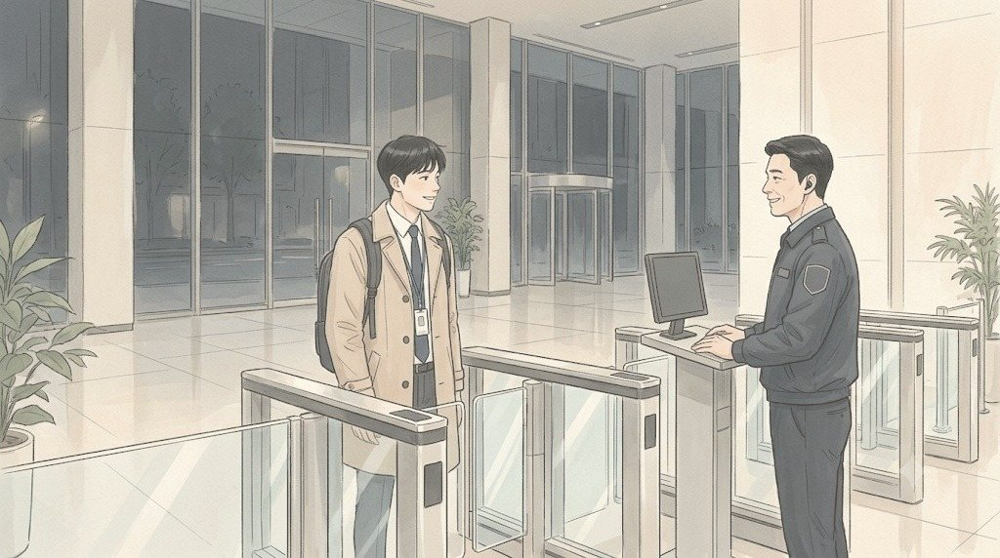
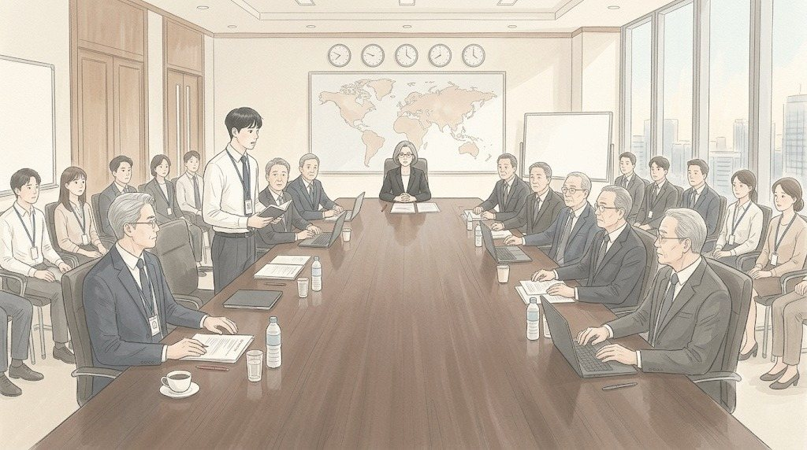
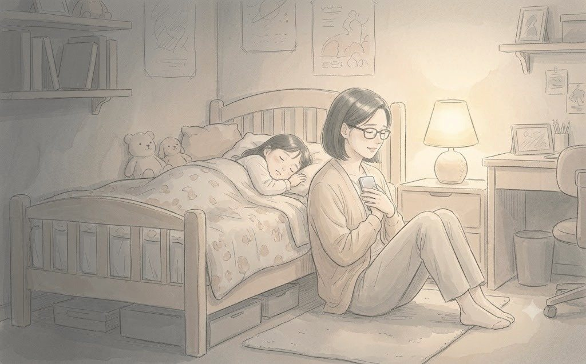

금요일 밤 11시 4분. 이우진의 휴대폰이 울렸다.
최윤아였다. 남편 최정훈은 건설사 현장 관리 과장이었다. 세종의 아파트 현장이 마무리 단계라 한 달째 주중에는 내려가 있었고, 이번 주는 준공 검사 때문에 주말까지 올라오지 못했다. 이번 주 토요일, 3주차 보고에서 결과 발표는 그녀가 맡기로 되어 있었다. 결제 단계를 아홉에서 다섯으로 줄인 지 사흘. 사흘 동안 무엇이 바뀌었는지 숫자로 말하는 자리였다. 그 숫자를 만든 사람이 그녀였다.
이우진은 답을 쓰려다 멈췄다. 한지석은 9단계 분석을 발표해야 했다. 백승원은 사업부 협조 현황을. 권재혁은 전체를. 남는 사람은 하나였다.
메시지 창에 한지석의 이름이 떴다. 팀 대화방이었다.
첫 문장만 정확하게. 이우진은 그 말을 밤새 붙잡고 있었다.
새벽 1시 12분. 휴대폰이 한 번 더 울렸다. 팀 대화방이 아니라 개인 메시지였다. 보낸 사람을 보고 이우진은 침대에서 몸을 일으켰다.
마지막 줄의 뜻은 다음 날 아침에야 알게 된다. 이우진은 '네'라고 답하려다 지우고, '감사합니다'라고 썼다가 지우고, 결국 '네, 상무님'이라고 보냈다. 숫자 1은 바로 사라졌다. 상무도 아직 깨어 있었다.
새벽 3시. 원룸 책상에 앉아 최윤아의 발표 메모를 소리 내어 읽었다. 메모는 깔끔했다. '결제 단계 9 → 5. 적용 후 3일간 결제 이탈률 변화. 비회원 간편 구매 비중. 연휘 제외 팝업 중단 효과.' 숫자 옆마다 그녀의 작은 글씨로 주석이 달려 있었다. '사장님이 물어보시면: 3일은 짧다는 것 먼저 인정.'
그는 첫 문장을 열두 번 바꿨다. 열세 번째 문장을 수첩 맨 위에 적었다.
'지난주까지 고객은 아홉 번을 눌렀습니다. 이번 주부터는 다섯 번입니다.'
같은 시각, 최윤아는 아이 방 바닥에 앉아 있었다.
서아는 해열제를 먹고 겨우 잠들었다. 이마에 붙인 해열 패치가 반쯤 떨어져 있었다. 최윤아는 패치를 다시 붙이고, 아이의 손을 잡았다. 작고 뜨거운 손이었다.
휴대폰에는 발표 메모 파일이 열려 있었다. 그녀는 3시간째 그걸 고치고 있었다. 이우진이 읽기 쉽게, 주석을 하나씩 더 달았다. '여기서 숨 한 번.' '이 숫자는 천천히.'
새벽 4시 반. 서아가 눈을 떴다.
"엄마, 오늘 토요일이야?"
"응."
"그럼 엄마 또 회사 가?"
최윤아는 대답하지 못했다. 지난 두 번의 토요일, 아이는 엄마 없이 일어났다. 아빠가 해 준 주먹밥을 먹고, 엄마가 미리 싸 둔 도시락을 들고 토요 돌봄 교실에 갔다.
"아니. 오늘은 엄마 집에 있어. 하루 종일."
"진짜?"
"진짜."
서아는 엄마 손을 꼭 쥐고 다시 잠들었다. 최윤아는 그 손을 놓지 않은 채, 다른 손으로 팀 대화방에 메시지를 남겼다.
새벽 5시 10분. 청연타워 1층 보안 게이트에서 출입증을 찍자, 보안 데스크의 남자가 고개를 들었다.

"또 토요일이네요, 과장님."
보안팀 야간 근무 탁민규. 첫 토요일 새벽, 29층에 불이 계속 켜져 있다며 전화를 걸었던 사람이었다. 마흔하나. 청연타워 보안팀에서만 6년째. 이제는 29층 사람들의 얼굴을 다 외웠다고 했다.
"오늘은 몇 분이세요?"
"열여섯 명이요."
"그럼 엘리베이터 한 대는 29층에 세워 둘게요. 사장님 오시기 전에."
탁민규는 그렇게 말하고 다시 모니터를 봤다. 아무도 부탁하지 않은 일이었다. 이우진은 그런 일들이 모여 회의 하나가 굴러간다는 걸, 3주 만에 조금 알게 되었다.
새벽 5시 반, 29층. 이우진은 대회의실 불을 켰다. 세 번째 토요일이었다. 상온 생수 열여섯 병, 유리잔 열여섯 개, 검정과 빨강 볼펜. 이제 양은주 비서에게 받아 적지 않아도 손이 기억했다.
출력본 열여섯 부의 9페이지부터 11페이지까지가 그의 몫이었다. 그는 그 세 장을 열여섯 번 넘기며 스테이플러 각도를 확인했다. 손이 떨렸다.
"떨려?"
백승원이 컵라면 대신 김밥을 사 들고 왔다. 지난주에는 라면, 이번 주에는 김밥. 그가 사 오는 음식으로 회의의 긴장도를 짐작할 수 있었다. 김밥은 꼭꼭 씹어야 하는 음식이었다.
"네."
"나 처음 사장님 보고할 때 넥타이를 두 개 맸다."
"두 개요?"
"새벽에 너무 떨려서, 매고 있는 거 잊어버리고 하나 더 맸어. 회의실 들어가서야 알았어. 근데 아무도 말을 안 해 줘. 사장님이 끝나고 한마디 하시더라. '백 차장, 넥타이는 하나면 충분해요.'"
이우진이 웃었다. 처음으로 어깨에서 힘이 조금 빠졌다.
6시 20분. 양은주 비서가 먼저 올라왔다. 그녀는 회의실을 한 바퀴 돌며 생수병의 라벨 방향을 하나씩 확인했다. 그리고 이우진의 출력본을 보더니 물었다.
"오늘 결과 발표, 이 과장님이 하세요?"
"네. 최 과장님이 아이가 아프셔서요."
양은주는 잠깐 그를 봤다. 문혜경을 10년째 모신 사람의 눈이었다. 사장이 무엇을 들으면 펜을 드는지, 무엇을 들으면 펜을 내려놓는지 아는 눈.
"사장님은 첫 문장만 들으세요. 나머지는 페이지로 보세요. 그러니까 첫 문장이 숫자면 돼요."
그녀는 그 말만 하고 사장실 쪽으로 돌아갔다. 이우진은 수첩의 첫 문장을 다시 봤다. 아홉 번, 다섯 번. 숫자였다.
6시 58분. 회의실이 조용해졌다. 7시 정각. 문혜경이 들어와 앉았다.
권재혁의 개요, 한지석의 9단계 분석, 백승원의 사업부 협조 현황. 25분이 지났다. 문혜경은 한 번도 빨간 볼펜을 들지 않았다. 대신 몇 번 고개를 끄덕였다. 끄덕임은 지난 두 번의 토요일에는 없던 동작이었다.
"다음은 결과입니다. 최윤아 과장 대신 이우진 과장이 보고드리겠습니다."
권재혁이 말했다.
이우진이 일어섰다. 열여섯 명의 눈이 그에게 향했다. 그는 수첩을 내려다봤다. 첫 문장이 거기 있었다. 열세 번 고친 문장.
입을 열었다.

"지난주까지..."
목소리가 나오지 않았다.
다음 단어가 어디로 사라졌는지 알 수 없었다. 수첩의 글씨가 눈앞에서 흐려졌다. 회의실의 공기가 무거워졌다. 누군가 의자를 고쳐 앉는 소리가 들렸다. 황인석 대표가 손목시계를 봤다. 엄기태 상무가 팔짱을 꼈다.
1초.
2초.
3초.
첫 회의 날, 사장의 '왜' 앞에서 권재혁이 말을 고르던 몇 초가 떠올랐다. 이제 그 침묵은 그의 것이었다.
문혜경이 볼펜을 내려놓았다.
"이 과장."
이우진은 고개를 들었다.
"천천히 해요. 틀린 숫자라도 괜찮으니까, 말해요."
그 목소리는 크지 않았다. 지난 두 번의 토요일, 이 회의실에서 들었던 어떤 목소리보다 낮았다.
이우진은 숨을 한 번 쉬었다. 최윤아의 주석이 떠올랐다. '여기서 숨 한 번.'
"지난주까지 고객은 아홉 번을 눌렀습니다."
목소리가 돌아왔다.
"이번 주부터는 다섯 번입니다."
문혜경이 9페이지를 넘겼다. 그리고 그래프 하나를 오래 봤다. 이우진은 다음 문장을 말했다. 그다음 문장도. 최윤아가 새벽에 달아 둔 주석들이 하나씩 그를 붙잡아 주었다.
같은 시각, 최윤아는 서아 옆에 누워 휴대폰 화면을 보고 있었다.
팀 대화방에 백승원의 메시지가 하나씩 올라왔다. 회의실 테이블 아래에서 몰래 치는 것 같았다. 오타가 많았다.
최윤아는 숨을 멈췄다. 그리고 다음 메시지가 올라오기까지 1분 동안, 아무것도 하지 못했다.
최윤아는 휴대폰을 가슴에 대고 눈을 감았다. 옆에서 서아가 뒤척이다 엄마의 팔을 끌어안았다. 아이의 이마는 새벽보다 조금 덜 뜨거웠다.

3분이 지났을 때, 문혜경이 고개를 들었다.
"이 숫자, 누가 만들었어요?"
"최윤아 과장입니다. 오늘 아이가 열이 나서, 집에 있습니다."
회의실이 다시 조용해졌다. 이번 침묵은 앞의 것과 달랐다. 이우진은 문혜경의 표정을 읽을 수 없었다.
그녀가 빨간 볼펜을 다시 집었다.
(EP10 끝)